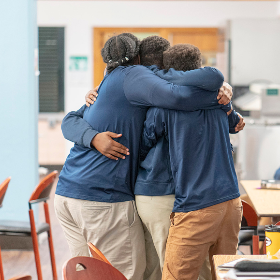
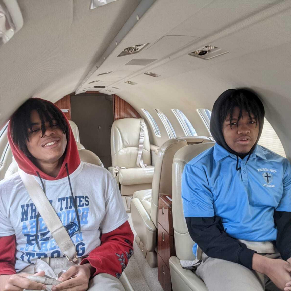

Student Life & Brotherhood
Building a Brotherhood
At Kingdom Prep, brotherhood means walking beside one another through every challenge and celebrating every victory. Students forge lifelong bonds of support, accountability, and Christian friendship.

The Nehemiah Project & Experience
Learning extends beyond the traditional classroom. Through hands-on initiatives like the Nehemiah Hour and experiential learning trips, students discover their callings, explore technical career paths, and solve practical problems in the surrounding community.
